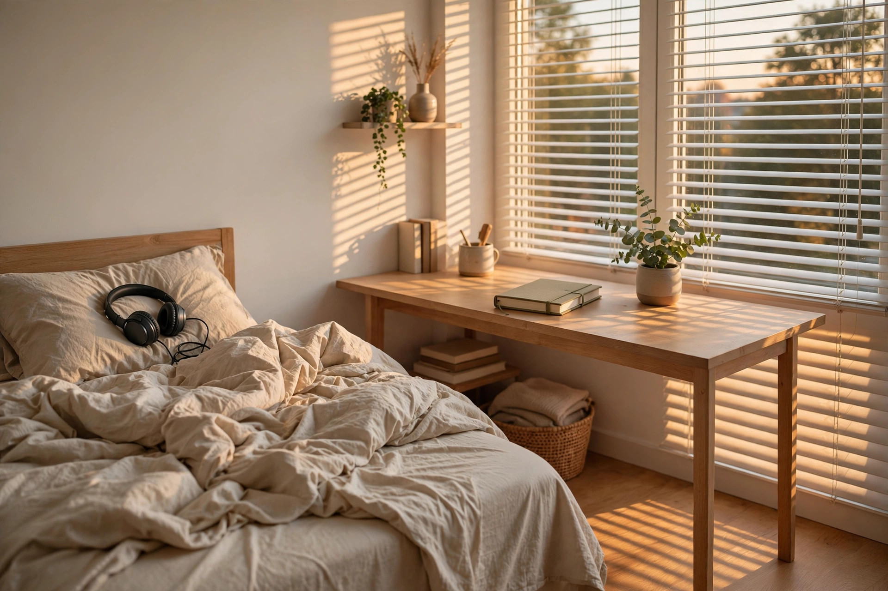

Why teens are cranky: the science, in plain language
Sleep, brain development, and stress — what's actually happening inside your teenager, explained without jargon.
Honest, practical guidance for the hard parenting days
A parent survival guide
Somewhere between childhood and adulthood, your sweet kid started answering everything with sighs, eye rolls, and slammed doors. It's disorienting, and it's normal. These guides are for parents who want to understand what's going on, handle the heated moments better, and stay sane in the process. No judgment, no perfect-parent fairy tales — just honest, practical help.

Pick your battle — we mean, your guide.
Sleep, brain development, and stress — what's actually happening inside your teenager, explained without jargon.
You can't win every argument, and you shouldn't try. How to sort the must-wins from the let-it-go moments.
Real scripts for heated moments: what to say when the yelling starts, the door slams, or you're about to lose it yourself.
Normal teen moodiness vs. genuine red flags — and how to tell the difference without panicking over every bad mood.
You can't pour from an empty cup. Why your own rest, friendships, and boundaries matter — for you and for them.